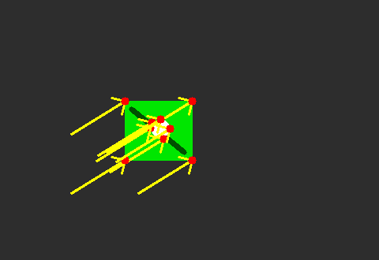

9. Vídeo, movimento e fluxo óptico¶
O que você aprenderá¶
Uma imagem isolada registra um instante. Um vídeo acrescenta uma nova dimensão: tempo. Neste capítulo, você aprenderá a pensar em sequências de frames, prazo de processamento, movimento aparente e rastreamento de pontos.
Ao final, deverá conseguir:
- explicar vídeo como sequência temporal de imagens;
- relacionar FPS e orçamento de tempo por frame;
- usar
VideoCapturecom segurança; - compreender subtração de fundo;
- interpretar máscaras de movimento;
- compreender a hipótese de constância de brilho;
- derivar intuitivamente a equação do fluxo óptico;
- explicar o problema da abertura;
- compreender Lucas–Kanade;
- selecionar bons pontos com Shi–Tomasi;
- explicar o uso de pirâmides;
- filtrar pontos por status e erro;
- calcular deslocamento e velocidade;
- compreender oclusão, deriva e verificação ida–volta.
O método de Lucas e Kanade (1981) é um dos fundamentos clássicos para estimar movimento local. Szeliski (2022) destaca que análise temporal exige compreender tanto a geometria do movimento quanto as limitações das hipóteses de aparência.
9.1 Vídeo é uma sequência com memória¶
Um vídeo pode ser representado como:
Cada frame é uma imagem, mas a informação de movimento surge da relação entre frames.
Analogia: desenho animado em folhas¶
Uma folha isolada mostra apenas uma pose. Ao folhear rapidamente várias folhas, percebemos movimento porque comparamos posições ao longo do tempo.
9.2 FPS e orçamento de tempo¶
Se o vídeo possui 30 FPS:
Isso significa que um sistema que deseja acompanhar a taxa em tempo real precisa, em média, processar cada frame dentro desse orçamento.
Para 60 FPS:
Tempo real não significa apenas 'terminar rápido'
Um sistema em tempo real precisa respeitar prazos. Se cada frame demora 100 ms num vídeo de 30 FPS, o atraso tende a se acumular.
9.3 Abrindo um vídeo ou câmera¶
cap = cv2.VideoCapture(0)
if not cap.isOpened():
raise RuntimeError("Não foi possível abrir a câmera")
Para arquivo:
9.4 Lendo frames¶
O booleano ok deve ser verificado antes de usar frame.
9.5 Consultando propriedades¶
fps = cap.get(cv2.CAP_PROP_FPS)
largura = int(cap.get(cv2.CAP_PROP_FRAME_WIDTH))
altura = int(cap.get(cv2.CAP_PROP_FRAME_HEIGHT))
frames = int(cap.get(cv2.CAP_PROP_FRAME_COUNT))
Nem toda câmera fornece todas as propriedades de maneira confiável; sempre valide os valores retornados.
9.6 Estratégias para reduzir atraso¶
Se o processamento é pesado:
- reduza resolução;
- processe frames alternados;
- separe captura e inferência;
- use lote quando o modelo permitir;
- evite conversões desnecessárias;
- meça cada etapa.
Analogia: esteira industrial¶
Se chegam 30 peças por segundo e a máquina inspeciona apenas 10, peças se acumulam. É necessário acelerar a inspeção ou reduzir o fluxo processado.
9.7 Subtração de fundo¶
Com câmera relativamente estática, podemos modelar o que costuma permanecer no cenário e destacar o que mudou.
subtrator = cv2.createBackgroundSubtractorMOG2(
history=500,
varThreshold=16,
detectShadows=True
)
mascara = subtrator.apply(frame)
MOG2 mantém modelos estatísticos adaptativos para os pixels.
9.8 O subtrator não entende objetos¶
Movimento detectado pode ser causado por:
- pessoa;
- carro;
- sombra;
- reflexo;
- folhas balançando;
- câmera tremendo;
- mudança de exposição.
Portanto, uma máscara de movimento não é automaticamente uma máscara semântica de “objeto importante”.
9.9 Limpando máscara de movimento¶
_, mascara = cv2.threshold(
mascara,
200,
255,
cv2.THRESH_BINARY
)
kernel = cv2.getStructuringElement(
cv2.MORPH_ELLIPSE,
(5, 5)
)
mascara = cv2.morphologyEx(
mascara,
cv2.MORPH_OPEN,
kernel
)
mascara = cv2.morphologyEx(
mascara,
cv2.MORPH_CLOSE,
kernel
)
Depois, contornos podem transformar regiões em caixas.
9.10 Fluxo óptico¶
Fluxo óptico estima o deslocamento aparente de estruturas entre frames.
Uma hipótese fundamental é a constância de brilho:
onde (u,v) representa o deslocamento (LUCAS; KANADE, 1981).
Analogia: acompanhar uma marca numa bola¶
Se uma pequena marca escura estava em (x,y) e aparece poucos pixels adiante no frame seguinte, tentamos estimar esse deslocamento.
9.11 Linearização da constância de brilho¶
Para movimentos pequenos, aproximamos:
Temos:
Ix: mudança espacial em x;Iy: mudança espacial em y;It: mudança temporal;u,v: movimento desconhecido.
Há uma equação para duas incógnitas. Precisamos de mais restrições.
9.12 Lucas–Kanade¶
Lucas–Kanade assume que, numa pequena vizinhança, os pixels compartilham aproximadamente o mesmo movimento.
Assim, várias equações locais são combinadas para estimar (u,v).
Analogia: grupo caminhando junto¶
Uma pessoa isolada pode não fornecer informação suficiente sobre direção. Se vários pontos próximos do mesmo objeto se deslocam de modo coerente, podemos estimar melhor o movimento local.
9.13 Problema da abertura¶
Considere uma longa borda diagonal vista por uma pequena janela. É fácil detectar movimento perpendicular à borda, mas difícil determinar quanto ela se move ao longo de sua própria direção.
Esse é o problema da abertura.
Quinas são melhores porque possuem variação em mais de uma direção (SZELISKI, 2022).
9.14 Selecionando bons pontos com Shi–Tomasi¶
pontos = cv2.goodFeaturesToTrack(
cinza_anterior,
maxCorners=200,
qualityLevel=0.01,
minDistance=10,
blockSize=7
)
A função privilegia estruturas locais apropriadas ao rastreamento.
9.15 Lucas–Kanade piramidal no OpenCV¶
novos, status, erro = cv2.calcOpticalFlowPyrLK(
cinza_anterior,
cinza_atual,
pontos,
None,
winSize=(21, 21),
maxLevel=3
)
status indica quais pontos foram rastreados com sucesso segundo o algoritmo.
9.16 Por que usar pirâmides?¶
Movimentos grandes quebram a hipótese de deslocamento pequeno.
Uma pirâmide cria versões reduzidas da imagem.
Analogia: mapa em diferentes escalas¶
Uma viagem de 100 km parece enorme num mapa de bairro, mas pequena num mapa do país. Em resolução reduzida, deslocamentos grandes tornam-se menores e mais fáceis de estimar.
Depois, a estimativa é refinada nas escalas maiores.
9.17 Filtrando pontos válidos¶
Também podemos filtrar pelo erro:
Não aceite todos os pontos cegamente.
9.18 Desenhando vetores¶
for novo, antigo in zip(bons_novos, bons_antigos):
x2, y2 = novo.ravel()
x1, y1 = antigo.ravel()
cv2.arrowedLine(
saida,
(int(x1), int(y1)),
(int(x2), int(y2)),
(0, 255, 0),
2
)
O vetor é:
9.19 Deslocamento robusto¶
Se vários pontos pertencem ao mesmo objeto, podemos calcular a mediana dos deslocamentos:
deslocamentos = bons_novos - bons_antigos
mediana = np.median(
deslocamentos.reshape(-1, 2),
axis=0
)
print("dx, dy:", mediana)
A mediana reduz a influência de alguns outliers.
9.20 De pixels por frame para pixels por segundo¶
Se um objeto se move 4 pixels/frame em vídeo de 30 FPS:
Converter para m/s exige calibração geométrica e consideração de perspectiva.
9.21 Oclusão¶
Um ponto pode desaparecer atrás de outro objeto ou sair do quadro.
O algoritmo pode:
- perder o ponto;
- associá-lo incorretamente;
- produzir erro alto.
Por isso, rastreamento real exige manutenção de pontos e detecção periódica de novos candidatos.
9.22 Verificação ida–volta¶
Uma técnica útil:
- rastreie
t → t+1; - rastreie o resultado
t+1 → t; - compare a posição de retorno com a original.
Se a distância for grande, a correspondência é suspeita.
9.23 Deriva¶
Pequenos erros acumulados frame a frame podem deslocar gradualmente o rastreador.
Analogia: caminhada com bússola ligeiramente errada¶
Um erro de 1° parece pequeno a cada passo, mas após longa distância pode levar a um destino muito diferente.
Re-detectar features periodicamente reduz esse problema.
9.24 Fluxo esparso e fluxo denso¶
Lucas–Kanade costuma ser usado como fluxo esparso: acompanha pontos selecionados.
Fluxo denso tenta estimar deslocamento para muitas ou todas as posições da imagem.
Esparso:
- menor custo;
- ideal para tracking de features.
Denso:
- fornece campo mais completo;
- maior custo.
9.25 Exemplo integrado do capítulo¶
O código do capítulo 9 gera dois frames sintéticos com deslocamento conhecido e mede o movimento.
Pipeline:
frame anterior
↓
frame atual deslocado
↓
conversão para cinza
↓
Shi–Tomasi
↓
Lucas–Kanade piramidal
↓
filtro status/erro
↓
vetores
↓
mediana do deslocamento
↓
comparação com deslocamento verdadeiro

9.26 Erros comuns¶
| Sintoma | Causa provável | Correção |
|---|---|---|
| vídeo não abre | caminho/câmera inválida | teste isOpened() |
frame é None |
fim/erro de captura | verifique retorno |
| atraso cresce | processamento > orçamento | reduza custo/resolução |
| muitos pontos perdidos | movimento grande | aumente pirâmide/janela |
| tracking ruim em parede lisa | pouca textura | selecione quinas |
| pontos saltam entre objetos | ambiguidades/oclusão | ida–volta/filtragem |
| velocidade física absurda | conversão sem calibração | use geometria da câmera |
9.27 Perguntas de revisão¶
- Quanto tempo existe por frame a 30 FPS?
- Por que uma máscara de MOG2 não é uma máscara semântica?
- O que significa constância de brilho?
- Por que há duas incógnitas na equação do fluxo?
- Qual hipótese Lucas–Kanade adiciona?
- O que é problema da abertura?
- Por que quinas são boas para tracking?
- Para que servem pirâmides?
- O que
statusrepresenta? - O que é deriva?
Exercícios de fixação¶
Exercício 1¶
Calcule o orçamento por frame para 24, 30, 60 e 120 FPS.
Exercício 2¶
Abra um vídeo e imprima FPS, largura, altura e número de frames.
Exercício 3¶
Meça o tempo médio de uma operação por frame com time.perf_counter().
Exercício 4¶
Use MOG2 em um vídeo com câmera parada e aplique morfologia à máscara.
Exercício 5¶
Conte objetos móveis por contornos, usando um filtro mínimo de área.
Exercício 6¶
Gere dois frames com deslocamento conhecido de (20, -10) e estime com Lucas–Kanade.
Exercício 7¶
Aumente o deslocamento progressivamente e encontre o ponto de falha.
Exercício 8¶
Compare maxLevel=0, 1, 2 e 3.
Exercício 9¶
Implemente verificação ida–volta.
Exercício 10¶
Adicione umclusão sintética a parte dos pontos e observe status/erro.
Exercício 11¶
Calcule deslocamento mediano e médio. Adicione um outlier e compare robustez.
Exercício 12¶
Converta 5 pixels/frame para pixels/s em vídeos de 25 e 60 FPS.
Exercício 13¶
Explique quais dados adicionais seriam necessários para converter pixels/s em km/h de um veículo real.
Síntese¶
Vídeo acrescenta tempo ao problema visual. Subtração de fundo detecta mudança; fluxo óptico estima deslocamento aparente; Lucas–Kanade combina gradientes locais; pirâmides ajudam com movimentos maiores; e verificações temporais combatem correspondências ruins. A engenharia de vídeo também exige medir latência e respeitar o orçamento temporal da aplicação.
Referências¶
LUCAS, Bruce D.; KANADE, Takeo. An iterative image registration technique with an application to stereo vision. In: Proceedings of Imaging Understanding Workshop. 1981.
SZELISKI, Richard. Computer Vision: Algorithms and Applications. 2. ed. Cham: Springer, 2022.